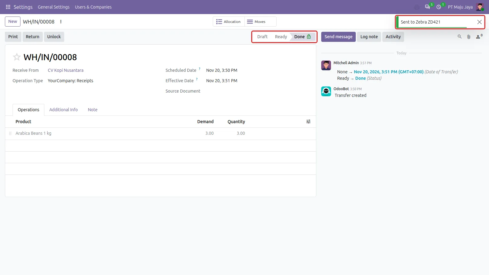
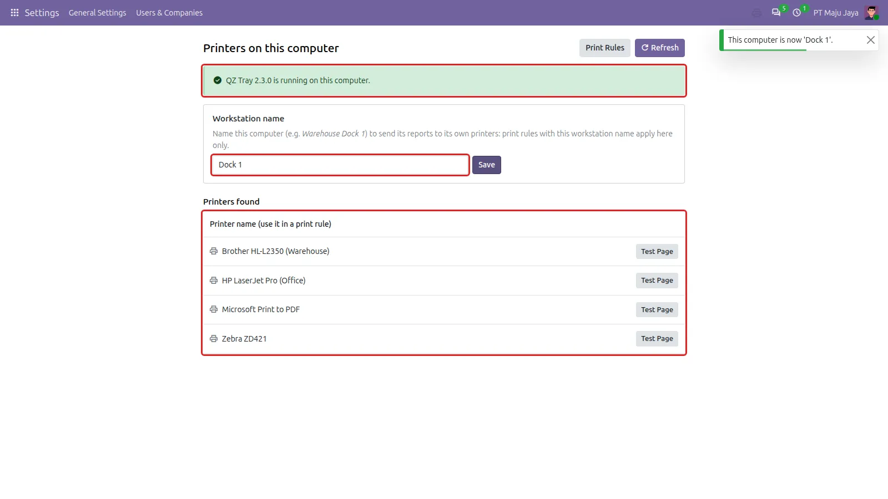
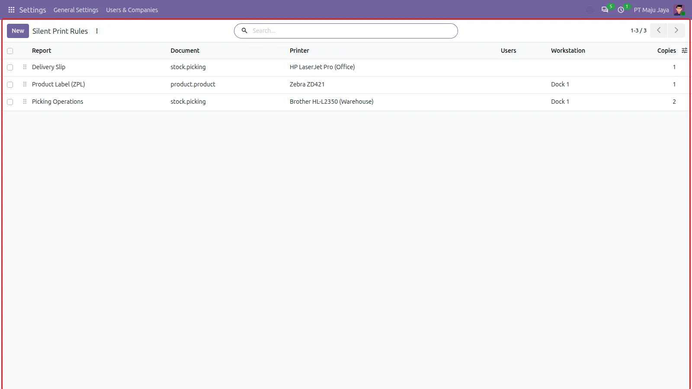
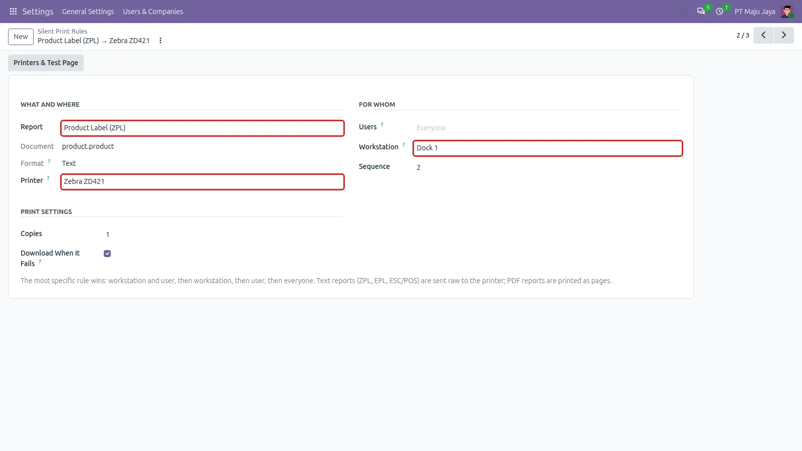
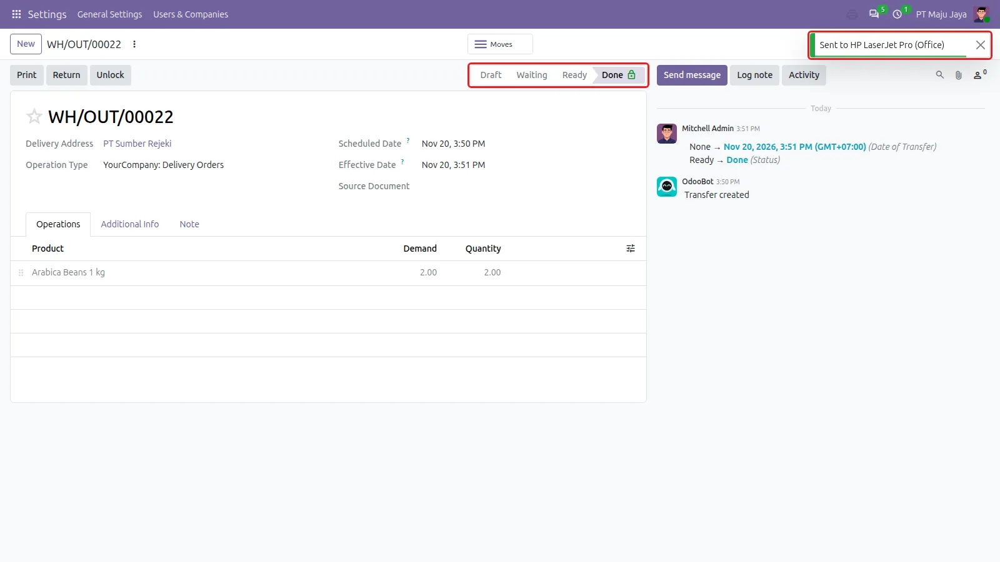
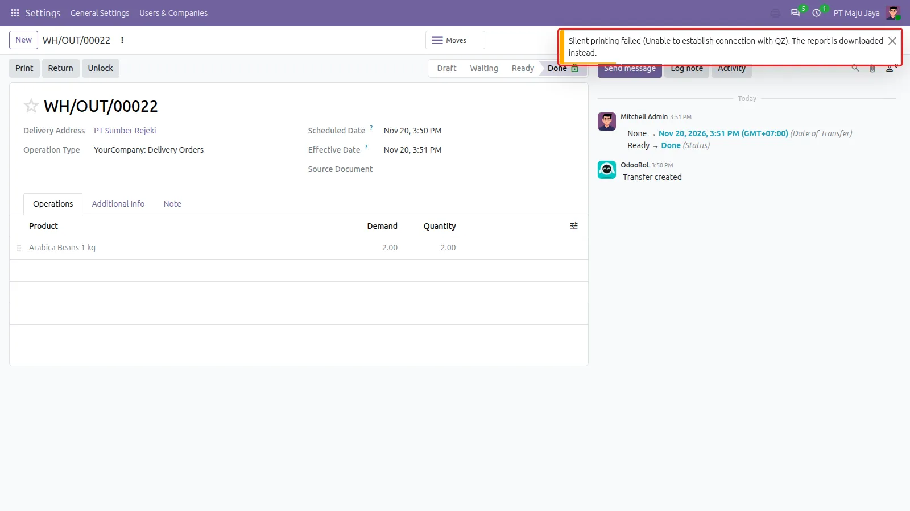
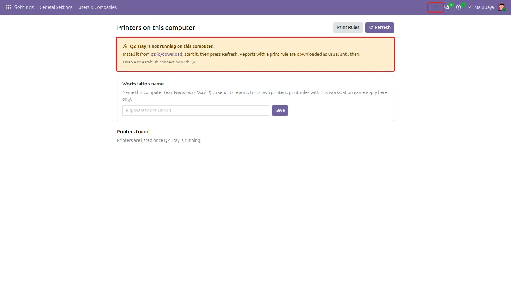
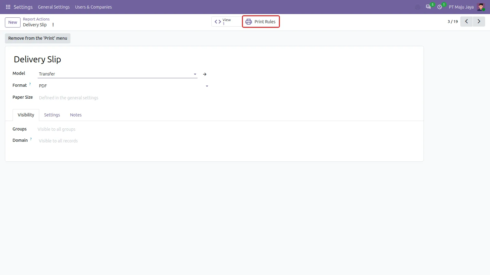
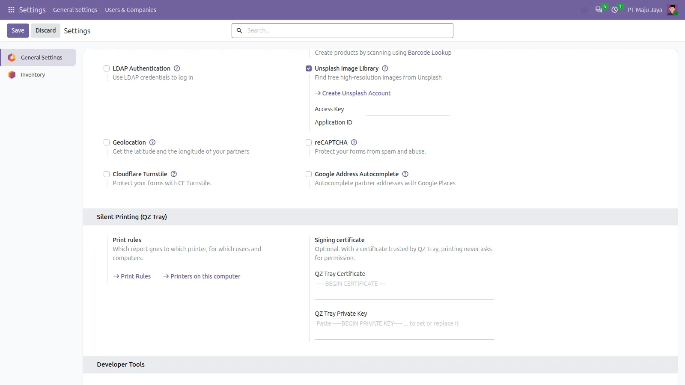

Direct Print - Silent Print with QZ Tray
Direct print of any report (PDF, ZPL, ESC/POS) to a local printer without the download or print dialog: printer per report, user and workstation, via QZ Tray.
- Price
- $39
- Odoo versions
- 17.0
- 18.0
- 19.0
- 20.0
- Technical name
tamadoo_silent_print- License
- OPL-1

Text and screenshots below are from the Odoo 20.0 version of this module.
Print delivery slips, invoices and ZPL labels straight to the printer of each computer: no download, no print dialog. Pick a printer per report, user and workstation, including Odoo's automatic printing on validation.
No download, no dialog


What you get
Any report, any printer
Every PDF report (delivery slip, invoice, picking list...) and every text report (ZPL / EPL / ESC-POS labels and receipts) can go straight to a printer.
Automatic printing too
Works with Odoo's own auto-print on validation: receipts print their product labels, deliveries their slip, without a click.
Per report, user and workstation
One rule per report; optionally only for some users or for one computer (counter, dock). The most specific rule wins.
Raw ZPL for label printers
Text reports are sent raw, so Zebra and other label printers print at full speed and quality.
Safe fallback
QZ Tray not running or printer missing? The report is downloaded as usual (or an error is shown, per rule).
Signed, permission-free
Optional certificate: the private key stays on the server, which signs only printing requests, never file or device access.
Printers page
QZ Tray status, the printers of this computer, a test page per printer and the workstation name.
No hardware box
Uses the free QZ Tray app on each computer (Windows, macOS, Linux). No IoT box, no server-side print queue.
Step by step
Name the computer, see its printers
Settings → Silent Printing → Printers on this computer: QZ Tray status, printers found with a Test Page button, and the name of this workstation.

Print rules
Which report goes to which printer: delivery slip to the office laser for everyone; product labels to the Zebra, only at Dock 1.

A rule
Report, printer, users, workstation, copies, orientation, colour, and what to do if printing fails.

Receipts print their labels
With auto-print of ZPL product labels on the receipt type, validating sends the labels to the Zebra at Dock 1.

Deliveries print their slip
Validating a delivery sends the PDF delivery slip to the office laser. Printing from the Print menu works the same.

QZ Tray not running? Nothing is lost
The report is downloaded as usual, with a message saying why.

Clear guidance
The Printers page says when QZ Tray is not running and where to get it.

Rules from the report
A Print Rules button on every PDF and text report.

Settings
Links to the rules and printers, and the optional signing certificate. The private key is write-only.

Set up in 5 minutes
- Install QZ Tray (free, qz.io/download) on each computer that prints, and start it.
- Settings → Silent Printing → Printers on this computer: check the printers, give the computer a workstation name if rules depend on it.
- Print Rules: choose a report and a printer name from that page.
- Optional: for Odoo's automatic printing, enable it on the operation type (e.g. Print delivery slip, Print product labels in ZPL).
- Optional: paste a certificate and private key trusted by QZ Tray to stop the permission prompt.
QZ Tray is a free desktop application by QZ Industries; this module bundles its unmodified qz-tray.js (LGPL-2.1). Printing needs QZ Tray running on the computer that prints. PDF reports need wkhtmltopdf on the Odoo server, as for any PDF in Odoo.
Get Direct Print
Questions before buying? Write to tama.odoo@gmail.com.